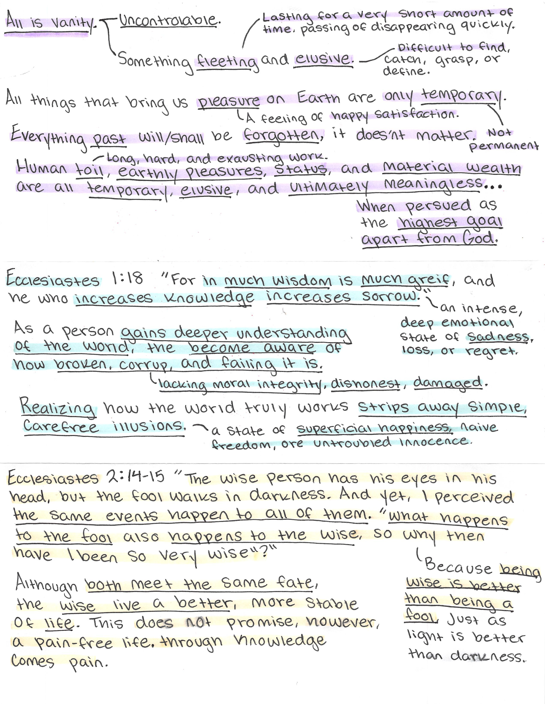
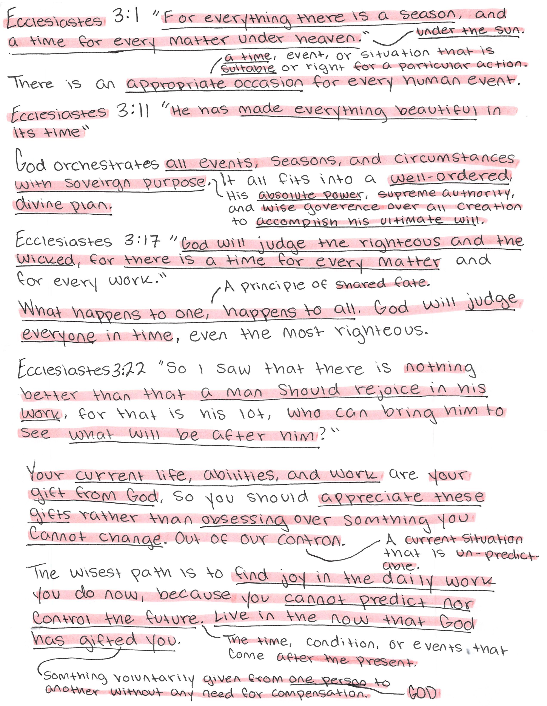
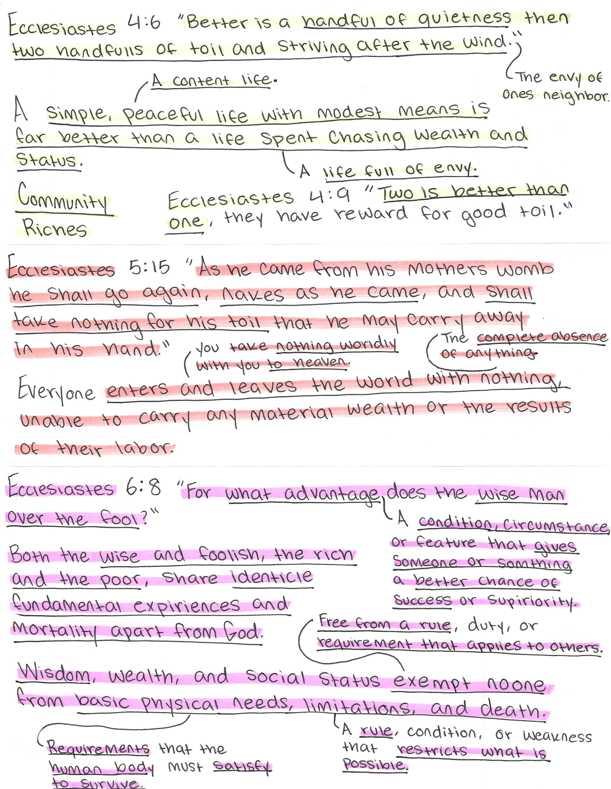
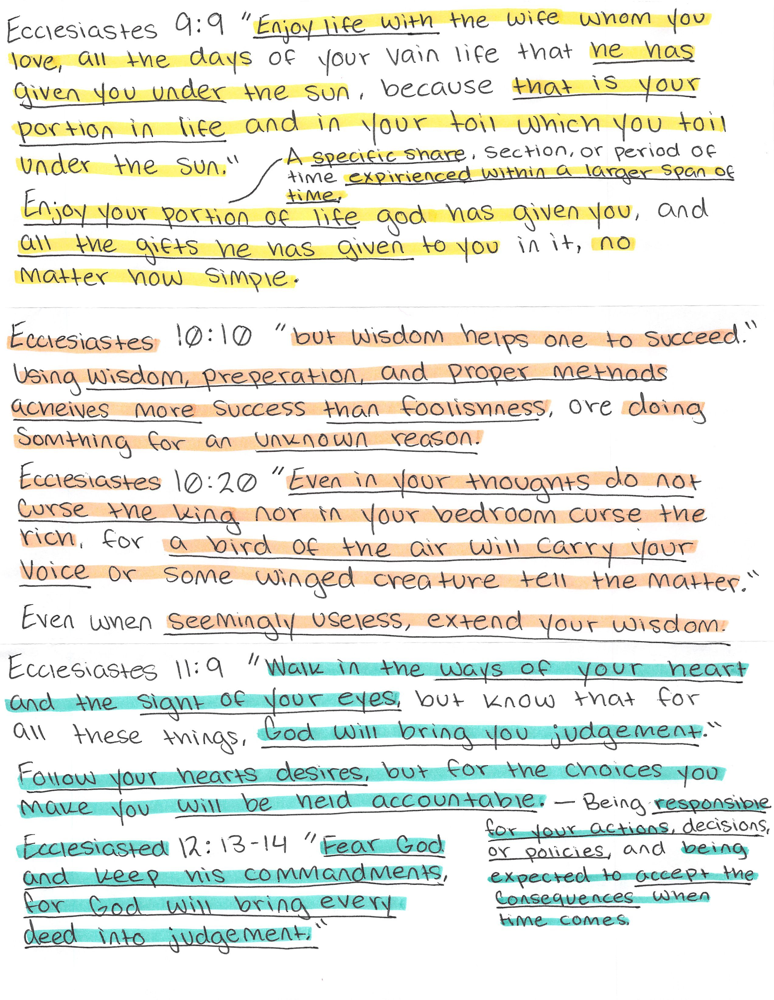

Page 1 — Ecclesiastes 1–2

Section 1
Yes, you hit the nail on the head.
People who worry about life are concerned about lasting significance--this does not exist for a Christian.
A good passage to reference is Matthew 6:25-34 where Jesus says not to worry.
Section 2
Yes, you are correct: if you know too much, you cannot have superficial happiness and joy (which Ecclesiastes generally promotes).
Section 3
Overall, I agree.
I would say that there is definitely a balance that's mentioned in chapter 1, but explicitly in Ecclesiastes 7:16-18.
16 Do not be excessively righteous and do not be overly wise. Why should you ruin yourself? 17 Do not be excessively wicked and do not be a fool. Why should you die before your time? 18 It is good that you grasp one thing and also not let go of the other; for the one who fears God comes forth with both of them.
Page 2 — Ecclesiastes 3

Perfect
You captured the essence of Ecclesiastes 3 perfectly!
If you want to read more about the sovereignty of God, I highly recommend looking at these 3 chapters:
- John 6
- Romans 9
- Ephesians 1
Page 3 — Ecclesiastes 4–6

Section 1
This is very good!
I used to be obsessed with making sure I did not waste my time, but this passage teaches that rest and enjoyment are a gift from God.
I also love 4:9; it definitely shows how marriage and partnership (like in work) can be a beautiful thing & a blessing from God.
Section 2
You're correct.
This is yet another reason to try and enjoy your life.
I do want to clarify 1 thing: I believe that you can get eternal treasure from God by doing certain things in life (after being saved by faith alone):
- Doing anything (including vanity) unto the Lord. Colossians 3:23-24
- Doing anything that you are called to do in life. John 15:1-8
- What you do with what God has given you. Matthew 25:14-30
A few examples of this would be:
- Something as simple as enjoying chocolate unto the Lord.
- God tells you to give the gospel to a friend or stranger.
- Using your talents and abilities to serve God and others.
Section 3
I think you are correct, but I would also say this passage continues the teaching on the importance of avoiding excessive wisdom.
I used to pray for as much wisdom as possible, but after studying this book, I realized that each person is called to a specific measure of wisdom. Romans 12:3
I now pray for the right amount of wisdom.
Page 4 — Ecclesiastes 9–12

Section 1
Yes, I agree.
Besides this passage continuing the teaching of the rest of the book, it also hints at a sovereignty passage in Acts: Acts 17:26-28.
This passage emphasizes God's sovereign control over all things, including the times and places of human existence.
Section 2
Yes, this passage clearly teaches the importance of wisdom. While we shouldn't be excessively wise, we also shouldn't be excessively foolish.
I think this passage pairs well with James 1:5-8.
Section 3
Good job on this section.
It is important to properly understand the end of this book where it all comes together.
The way I think of it is that at the heart of Ecclesiastes there are 2 points:
- The only thing of meaning is fearing God and doing his commandments.
- Everything that we are not commanded to do/not-do means nothing, so we are at liberty to choose the vain activity that we enjoy.